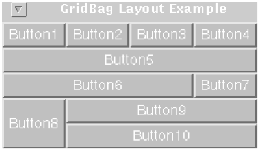

java.lang.Object | +----java.awt.GridBagLayout
public class GridBagLayout
extends Object
implements LayoutManager2, Serializable
The GridBagLayout class is a flexible layout manager that aligns components vertically and horizontally, without requiring that the components be of the same size. Each GridBagLayout object maintains a dynamic rectangular grid of cells, with each component occupying one or more cells, called its display area.
Each component managed by a grid bag layout is associated with an instance of GridBagConstraints that specifies how the component is laid out within its display area.
How a GridBagLayout object places a set of components depends on the GridBagConstraints object associated with each component, and on the minimum size and the preferred size of the components' containers.
To use a grid bag layout effectively, you must customize one or more of the GridBagConstraints objects that are associated with its components. You customize a GridBagConstraints object by setting one or more of its instance variables:
The following figure shows ten components (all buttons) managed by a grid bag layout:

Each of the ten components has the fill field of its associated GridBagConstraints object set to GridBagConstraints.BOTH. In addition, the components have the following non-default constraints:
Here is the code that implements the example shown above:
import java.awt.*;
import java.util.*;
import java.applet.Applet;
public class GridBagEx1 extends Applet {
protected void makebutton(String name,
GridBagLayout gridbag,
GridBagConstraints c) {
Button button = new Button(name);
gridbag.setConstraints(button, c);
add(button);
}
public void init() {
GridBagLayout gridbag = new GridBagLayout();
GridBagConstraints c = new GridBagConstraints();
setFont(new Font("Helvetica", Font.PLAIN, 14));
setLayout(gridbag);
c.fill = GridBagConstraints.BOTH;
c.weightx = 1.0;
makebutton("Button1", gridbag, c);
makebutton("Button2", gridbag, c);
makebutton("Button3", gridbag, c);
c.gridwidth = GridBagConstraints.REMAINDER; //end row
makebutton("Button4", gridbag, c);
c.weightx = 0.0; //reset to the default
makebutton("Button5", gridbag, c); //another row
c.gridwidth = GridBagConstraints.RELATIVE; //next-to-last in row
makebutton("Button6", gridbag, c);
c.gridwidth = GridBagConstraints.REMAINDER; //end row
makebutton("Button7", gridbag, c);
c.gridwidth = 1; //reset to the default
c.gridheight = 2;
c.weighty = 1.0;
makebutton("Button8", gridbag, c);
c.weighty = 0.0; //reset to the default
c.gridwidth = GridBagConstraints.REMAINDER; //end row
c.gridheight = 1; //reset to the default
makebutton("Button9", gridbag, c);
makebutton("Button10", gridbag, c);
setSize(300, 100);
}
public static void main(String args[]) {
Frame f = new Frame("GridBag Layout Example");
GridBagEx1 ex1 = new GridBagEx1();
ex1.init();
f.add("Center", ex1);
f.pack();
f.setSize(f.getPreferredSize());
f.show();
}
}